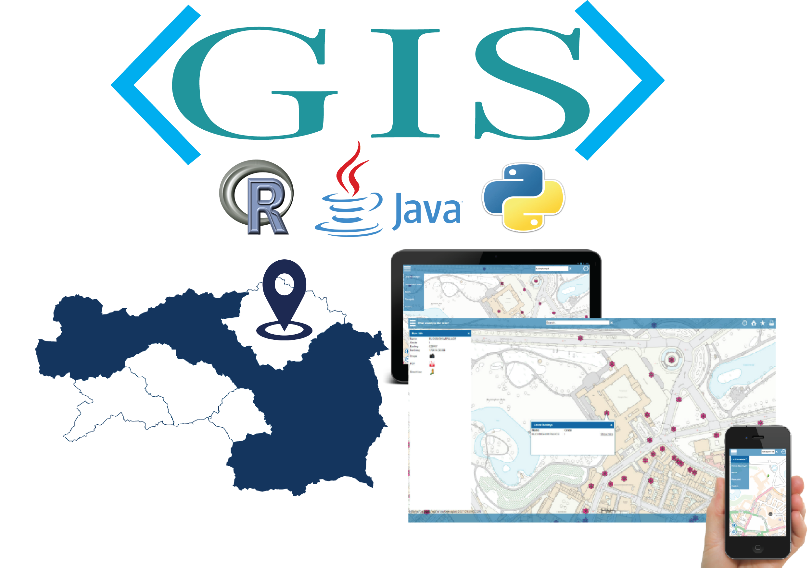

- Develop GIS mapping applications and geoprocessing tools with programming Languages Python, Javascript and R.
- manipulating, extracting, locating and analyzing geographic data.
- GIS Analysis, GIS Modeling, Data Integration & Conversion, Geocoding, and Geomatics.
- Understand client needs and design GIS applications in accordance
- Provide maintenance and support of GIS applications and mapping systems
- Analyze end-user issues and provide solutions.
- Assist in quality assurance checks on GIS systems and recommend updates or new techniques when applicable
|
 |